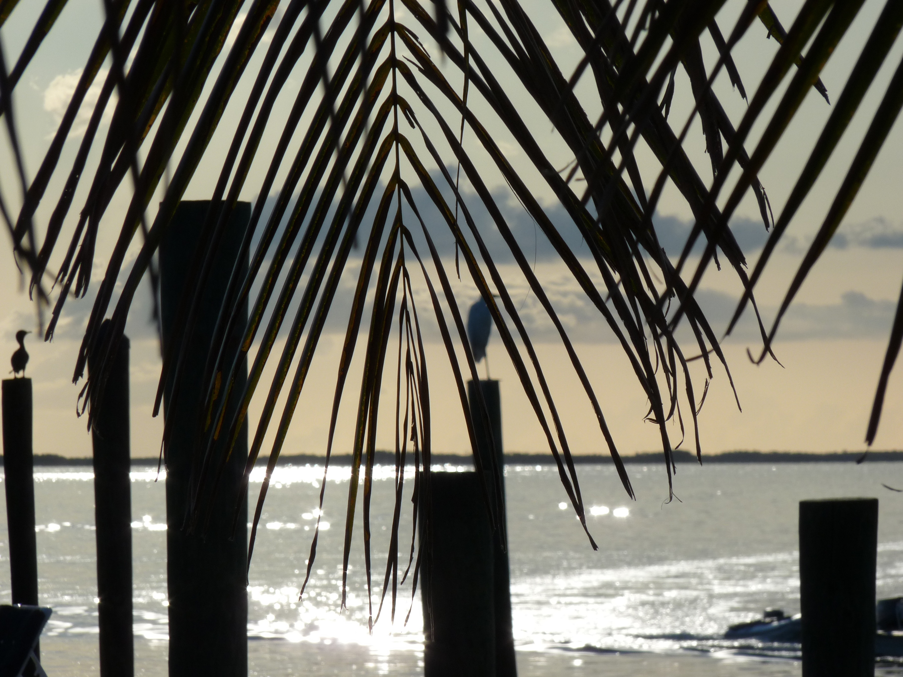
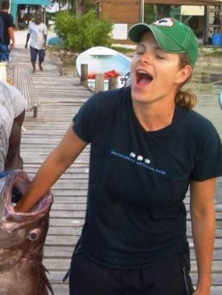
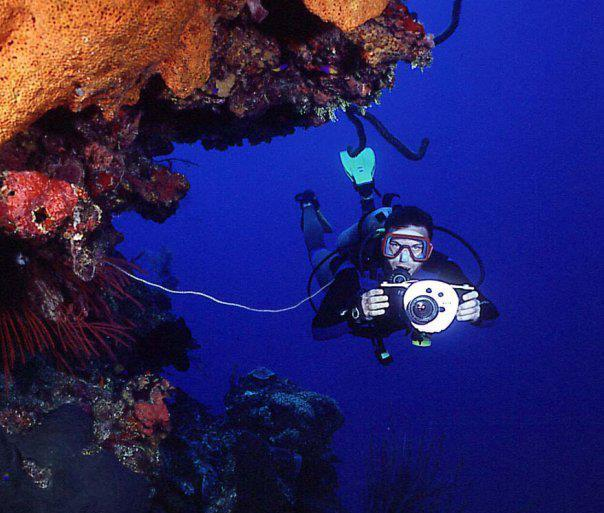
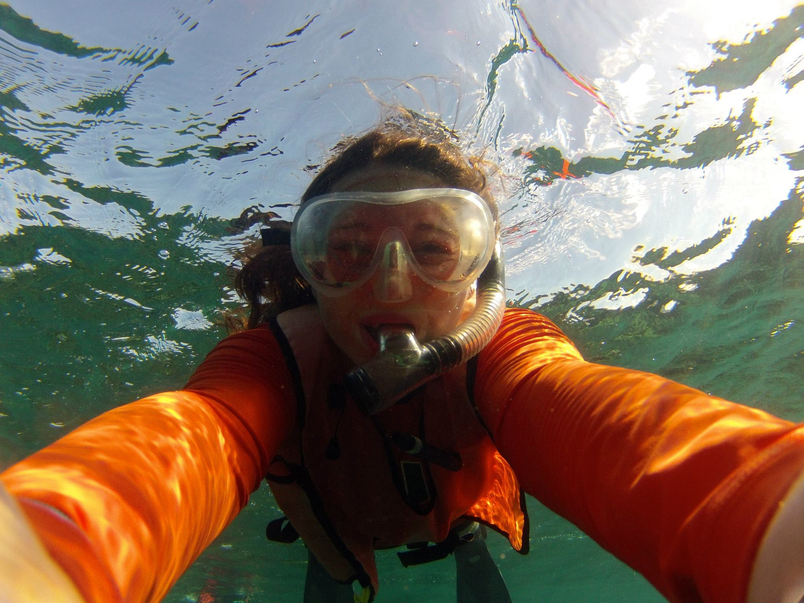
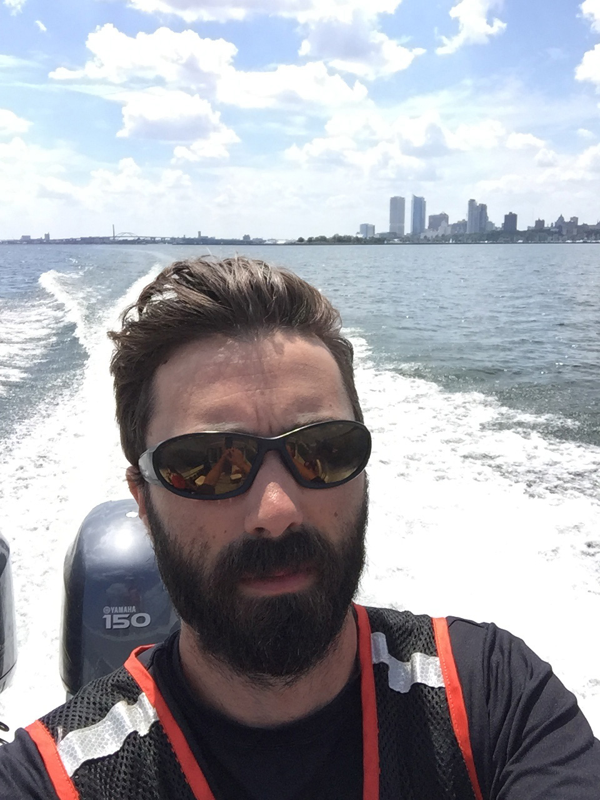

Gulf of Mexico - Contacts
Suzana D. Blake, PhD
(Anthropologist)
Phone: 305-361-4211
Email: suzana.blake@noaa.gov
Randy Clark, MS
(Marine Biologist)
Phone: 228-688-3732
Email: randy.clark@noaa.gov
Amy Freitag, PhD
(Sociologist)
Phone: 443-258-6066
Email: amy.freitag@noaa.gov
Steve Giordano
(Ecosystem Restoration Program Manager)
Phone: 727-209-5966
Email: steve.giordano@noaa.gov

Mike Jepson, PhD
(Social Scientist)
Phone: 727-551-5756
Email: mike.jepson@noaa.gov
Mandy Karnauskas, PhD
(Research Fish Biologist)
Phone: 305-361-4592
Email: mandy.karnauskas@noaa.gov

Christopher R. Kelble, PhD
(Oceanographer)
Phone: 305-361-4330
Email: chris.kelble@noaa.gov
Shannon Martin, PhD
(Estuarine Ecologist & Science-Management Liaison)
Phone: 337-739-8292
Email: shannon.martin@noaa.gov

Matthew McPherson, PhD
(Social Scientist)
Phone: 305-365-4112
Email: matthew.mcpherson@noaa.gov
Charline Quenée
(Socio-ecologist)
Phone: 305-361-4358
Email: charline.quenee@noaa.gov

Seann Regan, MA
(Social Scientist & Geographer)
Phone: 843-460-9643
Email: seann.regan@noaa.gov

Neda Trifonova, PhD
(Ecological Modeler)
Phone: 305-361-4418
Email: neda.trifonova@noaa.gov